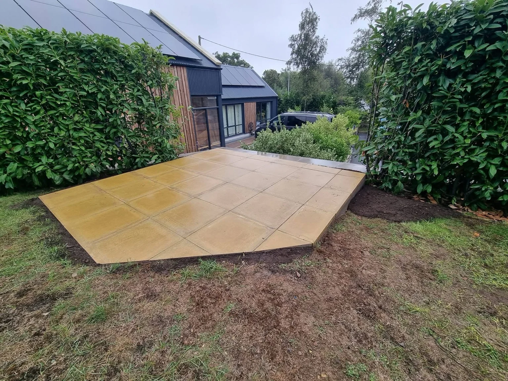
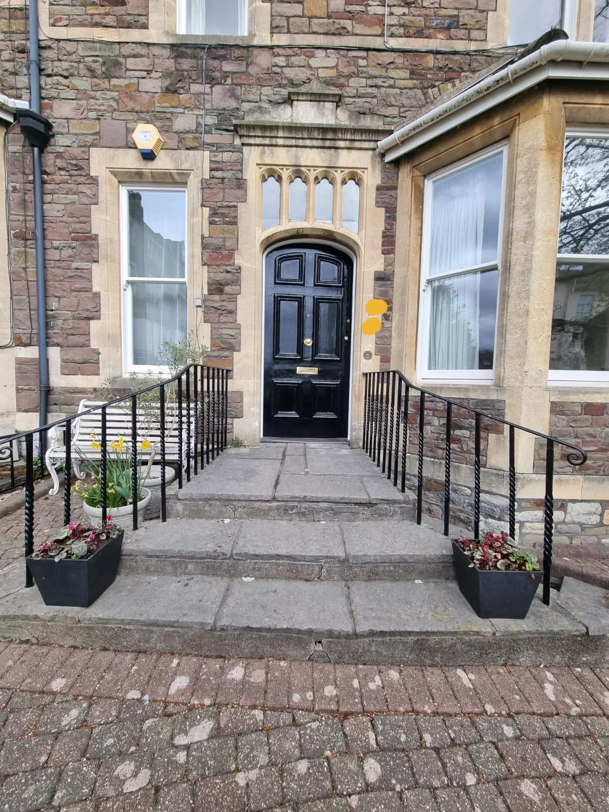
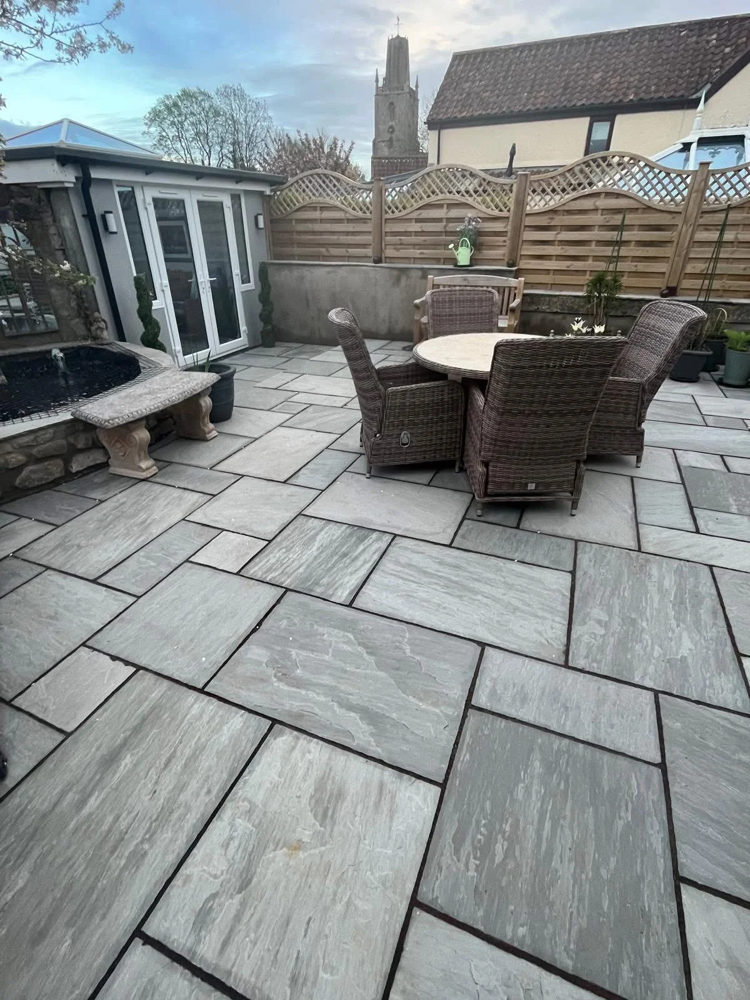

01
Property maintenance
Get help with the repair and upkeep jobs that make a home easier to live in, from sticking doors to loose fixtures.
Explore property maintenance →
JR PROPERTY SERVICES · BRISTOL & NORTH SOMERSET
Repairs, decorating, carpentry and garden improvements across Bristol and North Somerset.
Request a quote ↓LOOKING AFTER YOUR HOME
JR Property Services helps with everyday repairs and planned improvements. Ask about a room refresh, a new patio or a list of smaller jobs around the home.
About JR Property Services →

INDOORS AND OUT
Choose a service to see what we cover and what to include when you ask for a quote.
01
Get help with the repair and upkeep jobs that make a home easier to live in, from sticking doors to loose fixtures.
Explore property maintenance →02
Refresh a room, tidy up worn woodwork or update a front door. We can discuss the preparation and finish your surfaces need.
Explore painting & decorating →03
Practical woodwork for your home, from adjusting doors to fitting shelving and finishing trim.
Explore carpentry →04
Discuss everyday plumbing repairs and replacement fittings for your home.
Explore plumbing →05
Ask for help with gutters that overflow, leak at the joints or have visible damage.
Explore guttering →06
Make more of your outside space with practical landscaping, garden upkeep and improvements.
Explore landscaping & garden maintenance →07
Create a place to sit, eat or walk through the garden with paving or decking that suits your space.
Explore patios & decking →08
Improve privacy and access with timber fencing and gates fitted to your boundary.
Explore fencing & bespoke gates →09
Talk through a timber structure for garden storage, shelter or a dedicated outdoor space.
Explore pergolas, sheds & garden rooms →PROJECT GALLERY
Select a photo to see the full image.
BRISTOL & NORTH SOMERSET
Share your postcode, the work you need and any access restrictions. Add photos in WhatsApp if they help explain the job.